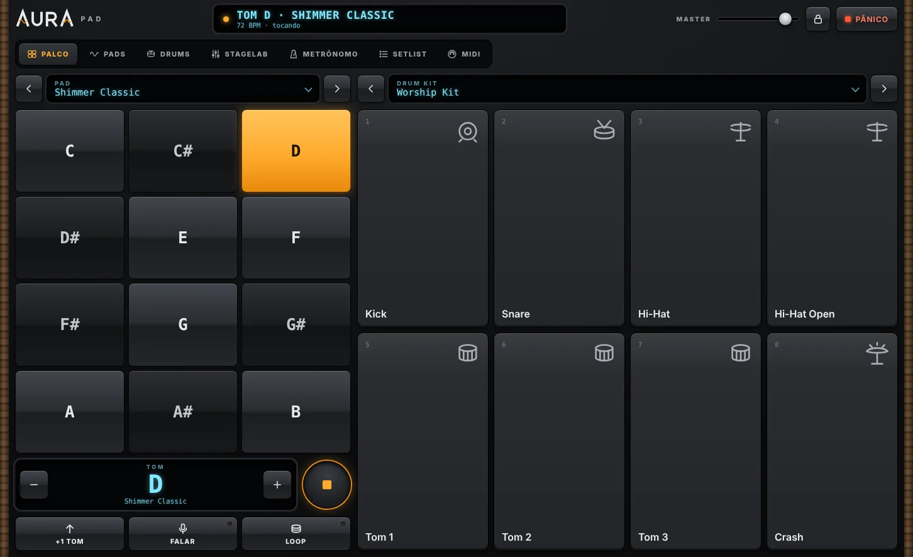
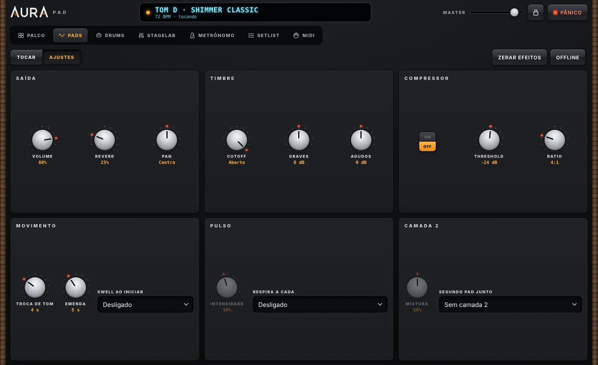

Manual
Manual do AURA Pad
Do primeiro pad ao culto.
1 · Bem-vindo ao AURA Pad
AURA Pad reúne numa tela o que o louvor ao vivo precisa por trás da banda: pads infinitos nos 12 tons, drum pads, bateria em loop, um teclado de palco (StageLab), metrônomo e setlist. É um programa para Windows e Mac, com todos os sons dentro do instalador, então funciona sem internet.

O que você precisa
- Windows 10 ou 11 (64 bits), ou macOS 10.15 ou superior (Intel ou Apple Silicon).
- Cerca de 400 MB livres no disco.
- Opcional: um teclado ou controladora MIDI por USB, e uma interface de áudio ou cabo para a mesa de som.
2 · Instalação
Windows
- Baixe AURA-Pad-Windows.exe na página do AURA Pad.
- Abra o instalador. Se o Windows mostrar “O Windows protegeu o computador”, toque em Mais informações e depois em Executar assim mesmo.
- Aceite o contrato, escolha a pasta e conclua. O atalho AURA Pad aparece na área de trabalho e no menu Iniciar.
Mac
- Baixe AURA-Pad-macOS.pkg na página do AURA Pad.
- Clique com o botão direito no arquivo, escolha Abrir e confirme em Abrir, porque o instalador ainda não tem assinatura da Apple.
- Siga o instalador. O AURA Pad fica na pasta Aplicativos.
- Na primeira vez, se o Mac bloquear o app, clique com o botão direito nele, escolha Abrir e confirme.
3 · Teste e ativação
Ao abrir pela primeira vez, o AURA Pad pede o seu e-mail e começa um teste de 15 dias com todos os recursos. Esse primeiro passo precisa de internet. Um selo no canto da tela mostra quantos dias faltam.
- Cada e-mail usa o teste uma vez. Reinstalar não reinicia o prazo.
- Chave de ativação: toque no selo do teste, cole a chave e toque em Ativar.
- Aparelhos: cada chave vale para até 3 aparelhos seus. Para trocar de aparelho, toque no selo LICENCIADO e em Desativar este aparelho, e ative no novo.
- Internet: depois de ativado, o AURA Pad funciona offline por até 30 dias entre as confirmações da licença.
4 · Palco
A tela Palco junta o que você usa durante o culto.
| Controle | O que faz |
|---|---|
| Tons (C a B) | Toque num tom para o pad entrar. Toque em outro tom para trocar com crossfade. Toque no tom aceso para parar. |
| Visor do tom com − e + | Desce ou sobe meio tom. |
| Botão redondo | Toca ou para o pad. |
| +1 Tom | Sobe um tom inteiro, para o refrão final. |
| Falar | Abaixa o pad enquanto você fala com a igreja. Toque de novo para voltar. |
| Loop | Liga a bateria em loop junto com o metrônomo. |
| Drum pads | Tocam os sons do kit escolhido. |
| Pânico | Para todo o som na hora. |
| Cadeado | Trava a tela contra toques acidentais. Segure o botão por 1,5 s para destravar. |
5 · Pads

Na aba Pads, em Tocar, escolha o timbre pela lista. Em Ajustes, gire os knobs (arraste para cima ou para baixo; dois toques voltam ao padrão):
- Saída: volume, reverb e pan.
- Timbre: cutoff (deixa o pad mais escuro), graves e agudos.
- Compressor: liga e ajusta threshold e ratio.
- Movimento: tempo da troca de tom, emenda do loop e swell ao iniciar (o pad sobe aos poucos por 1 a 8 compassos).
- Pulso: o pad sobe e desce no andamento do metrônomo, a cada 2, 4 ou 8 tempos.
- Camada 2: um segundo pad tocando junto, com mistura entre os dois.
6 · Drums
Na aba Drums há três partes:
- Pads: os pads do kit, com um ícone do tipo de som.
- Mixer: um fader para o volume de cada peça e o volume geral da bateria.
- Meus kits: salve o kit atual com um nome, importe seus samples de áudio e exporte ou importe kits.
Para trocar o som de um pad, toque em Trocar sons e depois no pad.
7 · StageLab

- Instrumentos: suba o fader de cada instrumento para somá-lo ao som. Toque no nome para silenciar.
- Efeitos: cutoff, release, compressor, reverb, delay, graves, médios e agudos valem para todos os instrumentos. O botão abaixo de cada knob liga e desliga.
- Set: escolha um set pronto ou salve os seus com Salvar e Novo set.
- Transpor e Oitava: mudam a altura do que você toca.
- Teclado: mostra o teclado na tela, com rodas de pitch e mod e sustain.
- MIDI: toque num fader, knob ou botão e mexa na controladora para ligar os dois. Toque em Concluir ao terminar.
8 · Metrônomo e loop
Ajuste o andamento com − e +, com a régua ou com Tap. Escolha o compasso, o som do click e o acento no 1. Em Bateria em loop, escolha um dos seis ritmos e o volume. O loop toca junto com o metrônomo e segue o andamento.
9 · Setlist
- Ajuste tom, pad, andamento, kit, efeitos e loop da música.
- Escreva o título e toque em Salvar estado atual.
- Toque na música para carregar tudo de uma vez. Use Anterior e Próxima durante o culto.
O botão de notas em cada música guarda a letra ou anotações e um tempo de troca de tom próprio. Crie várias setlists pelo seletor no topo, e use Backup completo para guardar tudo num arquivo.
10 · MIDI
Conecte o teclado ou a controladora por USB antes de abrir o AURA Pad. A aba MIDI mostra o que está conectado e a última mensagem recebida.
- Padrão: notas 36 a 51 tocam os drum pads; notas 60 a 71 trocam o tom do pad (C a B).
- Program Change: a mensagem N carrega a música N+1 da setlist, ótimo para um pedal.
- Mapear controles: ative, toque num botão do app e depois numa tecla ou pad da controladora.
11 · Problemas comuns
| Problema | O que fazer |
|---|---|
| Sem som | Confira o Master no alto da tela, o volume do computador e se o teste não terminou. |
| A controladora não aparece | Conecte por USB e feche e abra o AURA Pad. |
| Pede ativação | O teste acabou ou a licença não foi confirmada há mais de 30 dias. Conecte à internet e ative. |
| “Esta chave já está ativa em 3 aparelhos” | Desative a licença num dos outros aparelhos e tente de novo. |
| Aviso ao abrir o instalador | É o “desenvolvedor desconhecido”. Veja a seção Instalação. |
Uma criação Ledix Plugins · © 2026 · Todos os direitos reservados
Este manual acompanha o app; as telas podem variar levemente entre versões.